Introduction
Ce rapport accompagne le relevé d'audit effectué sur le site « emwelt.lu ».
La méthodologie d'audit employée repose sur le référentiel RGAA 4.1, consultable à l'adresse suivante : https://accessibilite.public.lu/fr/rgaa4.1/criteres.html
L'audit a été réalisé au moyen de l'utilisation de navigateurs web et d'outils spécialisés. Des tests de restitution ont également été effectués conformément à la base de référence définie par le RGAA 4.1.
Échantillon
L'audit a porté sur un échantillon de 12 pages pour le niveau double A (AA) :
| Nº page | Titre de la page | URL |
|---|---|---|
| P01 | Accueil | https://environnement.public.lu/fr.html |
| P02 | Aspects légaux | https://environnement.public.lu/fr/support/aspect-legaux.html |
| P03 | Accessibilité | https://environnement.public.lu/fr/support/accessibilite.html |
| P04 | Plan du site | https://environnement.public.lu/fr/support/plan.html |
| P05 | Recherche | https://environnement.public.lu/fr/support/recherche.html |
| P06 | Contact | https://environnement.public.lu/fr/support/contact.html |
| P07 | FAQ | https://environnement.public.lu/fr/support/faqs.html |
| P08 | Sentiers Natures | https://environnement.public.lu/fr/natur-erliewen/sentiers-nature.html |
| P09 | Vente de bois | https://environnement.public.lu/fr/emweltprozeduren/forets/vente_de_bois.html |
| P10 | Les centres nature et forêt | https://environnement.public.lu/fr/natur-erliewen/centres-d_accueil.html |
| P11 | Agréments | https://environnement.public.lu/fr/emweltprozeduren/Aides/agrements.html |
| P12 | La chasse | https://environnement.public.lu/fr/peche/chasse.html |
Environnement de test (base de référence)
Quelques critères RGAA, notamment ceux de la thématique JavaScript, incluent des tests de restitution à effectuer sur des technologies d'assistance associées à des navigateurs et des systèmes d'exploitation. Pour qu'un dispositif HTML / WAI-ARIA ou son alternative soit considéré comme compatible avec l'accessibilité, il faut qu'il soit pleinement fonctionnel, en termes de restitution et de fonctionnalités sur certaines combinaisons. Vous trouverez une explication détaillée de cet environnement de tests dans le document du RGAA 4.1.
Nous détaillons ci-dessous la base de référence utilisée pour réaliser les tests de restitution des composants du site.
Environnement de test – ordinateur
| Technologie d'assistance | Navigateur |
|---|---|
| NVDA 2020.3 | Firefox 90 |
| VoiceOver 10.15 | Safari 14 |
Environnement de test — mobile
| Système d'exploitation | Technologie d'assistance | Navigateur |
|---|---|---|
| Android 10 | TalkBack (dernière version) | Chrome 86 |
Accessibilité des pages auditées
Le site présente un niveau général d'accessibilité moyen.
Le niveau moyen de conformité relevé atteint 60,71 % de conformité sur l'ensemble des pages auditées, avec 58,54 % de conformité au niveau simple A (A) et 66,67 % de conformité au niveau double A (AA).
Le site est partiellement conforme.
Conformité RGAA 4.1 du site
| Conforme | Non conforme | |
|---|---|---|
| A | 58,54% | 41,46% |
| AA (légal) | 60,71% | 39,29% |
Note sur le calcul de conformité
La conformité globale (Tableau « Conformité RGAA 4.1 ») est calculée de la manière suivante : C / (C+NC). C est le nombre de critères conformes et NC le nombre de critères non conformes.
C'est ce nombre qui constitue la référence légale. Il représente le taux de conformité de l'échantillon.
Il est normal que le taux de conformité global diffère sensiblement du taux de conformité par page. En effet, un critère NC (non conforme) sur une page rend le critère non conforme sur l'ensemble de l'échantillon.
Pour qu'un site soit conforme (100 % des critères applicables sont conformes au niveau AA), il est nécessaire que le taux de conformité par page équivaille à 100 %.
Conformité pour chaque niveau
| Conforme | Non conforme | |
|---|---|---|
| A | 58,54% | 41,46% |
| AA | 66,67% | 33,33% |
Moyenne par pages
| Nº page | Titre de la page | %C |
|---|---|---|
| P01 | Accueil | 77,27% |
| P02 | Aspects légaux | 85,71% |
| P03 | Accessibilité | 96,88% |
| P04 | Plan du site | 96,88% |
| P05 | Recherche | 80,49% |
| P06 | Contact | 82,22% |
| P07 | FAQ | 86,49% |
| P08 | Sentiers Natures | 92,68% |
| P09 | Vente de bois | 83,78% |
| P10 | Les centres nature et forêt | 86,84% |
| P11 | Agréments | 94,29% |
| P12 | La chasse | 100,00% |
Moyenne par thématiques
| Thématiques | C | NC |
|---|---|---|
| Images | 66,67% | 33,33% |
| Cadres | NA | NA |
| Couleurs | 33,33% | 66,67% |
| Multimédia | NA | NA |
| Tableaux | 0% | 100% |
| Liens | 0% | 100% |
| Script | 0% | 100% |
| Eléments obligatoires | 62,50% | 37,50% |
| Structuration | 25% | 75% |
| Présentation | 71,43% | 28,57% |
| Formulaires | 62,50% | 37,50% |
| Navigation | 87,50% | 12,50% |
| Consultation | 100% | 0% |
Impacts utilisateurs
Les principales personnes impactées sont les personnes aveugles et celles qui naviguent au clavier. Les problèmes liés aux fonctionnalités (scripts), aux formulaires et à l'absence d'indication de langue rendent parfois difficiles l'utilisation et la compréhension du site par ces utilisateurs.
Contenus dérogés
La dérogation est un moyen d'exclure du champ d'application du référentiel des contenus particuliers. Les cas de dérogations sont très encadrés, vous en trouverez le détail dans le guide des dérogations.
Les contenus suivants n'entrent pas dans le calcul de la conformité ni dans le périmètre des éléments à rendre accessible, ils sont dérogés :
- Les sous-menus du menu de navigation (avec fourniture d’une alternative accessible)
- Les documents bureautiques pour charge disproportionnée
Droit à la compensation
Les dérogations émises notamment pour charge disproportionnée demandent en contrepartie la mise en place d'un moyen de compensation pour les utilisateurs. Pour les documents bureautiques par exemple, vous devez fournir un moyen à l'utilisateur de demander une version accessible d'un document s'il en a besoin. Cela peut être un mail ou un formulaire de contact.
Note sur le relevé des non-conformités
Ne sont cités dans ce rapport que quelques exemples issus du relevé des non-conformités.
De plus, toutes les occurrences d'une non-conformité ne sont pas listées dans le relevé. Par exemple : pour l'absence d'indication de langue sur les passages de texte en langue étrangère, le relevé mentionne quelques occurrences, mais ne les cite pas toutes.
Avis
La structure du site est relativement robuste et l'accès aux informations est, dans l'ensemble, correct. Cependant quelques erreurs d'accessibilité complexifient grandement l'utilisation et la compréhension du site pour certains utilisateurs, notamment pour atteindre certaines pages.
Les non-conformités les plus bloquantes pour les utilisateurs concernent :
- L'accès impossible à certaines parties du site en naviguant au clavier.
- Une structure de page incorrecte (titrage, landmarks et balises HTML5).
- L'absence d'indication de langue sur de nombreux passages de texte en langue étrangère.
Ce sont donc ces points qui devront nécessiter une attention toute particulière et qui demanderont le plus d'efforts.
Annexe technique
Images
Recommandation
Donner à chaque image porteuse d'information une alternative textuelle pertinente et une description détaillée si nécessaire. Lier les légendes à leurs images. Remplacer les images textes par du texte stylé lorsque c'est possible.
Images de décoration
Le site contient des images de décoration qui ne sont pas correctement identifiées, soit parce qu'elles ont une alternative renseignée, soit parce qu'il manque les attributs nécessaires pour qu'elles soient ignorées par les technologies d'assistance.
Ces images n'apportent aucune information et peuvent causer des problèmes de compréhension pour les aveugles et les grands malvoyants qui vont écouter les contenus avec un lecteur d'écran.
- Dans le cas d'une image insérée avec la balise
img, mettre unalt="". - Dans le cas d'une image insérée avec la balise
svg, mettre une propriété ARIAaria-hidden="true".
Constats sur le site
Les images SVG à l'intérieur des boutons de partage vers les réseaux sociaux ne sont pas correctement ignorées par les technologies d'assistance.
Couleurs
Recommandation
Ne pas donner l'information uniquement par la couleur et utiliser des contrastes de couleurs suffisamment élevés pour les textes et les composants d'interface.
Contrastes des textes
Plusieurs couleurs présentent un rapport de contraste insuffisant, ce qui peut poser problème aux grands malvoyants et aux déficients visuels qui ont des difficultés à percevoir les couleurs ou les contrastes.
Rapports de contrastes définis par le RGAA
- Pour les textes qui ont une taille de police calculée inférieure à 24px sans effet de graisse ou une taille de police calculée inférieure à 18,5px avec effet de graisse, le rapport de contraste entre la couleur du texte (y compris le texte en image) et son arrière-plan doit être de 4.5:1, au moins.
- Pour les textes qui ont une taille de police calculée supérieure ou égale à 24px sans effet de graisse ou une taille de police calculée supérieure ou égale à 18,5px avec effet de graisse, le rapport de contraste entre la couleur du texte (y compris le texte en image) et son arrière-plan doit être de 3:1, au moins.
Vous pouvez foncer les couleurs pour obtenir le rapport de contraste exigé.
Si la charte graphique ne peut être modifiée, fournissez une méthode aux utilisateurs pour consulter le site avec des contrastes suffisants. Ceci peut être réalisé simplement avec une fonctionnalité JavaScript et une surcharge CSS des couleurs.
Vous pouvez voir un exemple de ce type de mécanisme sur le site sncf.com. Dans les réglages d'accessibilité, vous trouverez une option qui permet d'afficher le site avec des contrastes renforcés et inversés.
Constats sur le site
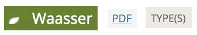Les liens du pied de page n'ont pas un contraste suffisant et, de manière générale, tous les passages de texte avec le couple de couleurs #658725 / #FFFFFF (ratio 4.16).
Sur la page Vente de bois, les liens avec l'intitulé "PDF" permettant de télécharger les catalogues ne sont pas suffisamment contrastés et, de manière générale, tous les couples #1B7CA8 / #F4F5F5 (ratio 4.28).
Le bouton permettant de masquer / afficher la zone de filtre sur la page de recherche n'est pas suffisamment contrasté avec les valeurs de couleurs #6D6E71 / #EEEAE2 (ratio de 4.25).
Contraste des composants d'interface
Les composants d'interface, les illustrations porteuses d'information ou encore les mises en couleurs porteuses d'information doivent être suffisamment contrastés pour être perçus par les utilisateurs ayant des troubles de perception des couleurs. Par exemple, une icône porteuse d'information devra avoir un rapport de contraste avec la couleur de fond de 3. De même, pour un champ de saisie de formulaire, dont la zone active est matérialisée par sa bordure, alors la couleur de cette bordure devra avoir un rapport de contraste de 3 avec la couleur de fond de la page.
Constats sur le site
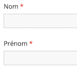Les champs de saisie des formulaires (pages contact et recherche) ne sont pas suffisamment contrastés, la visibilité de la zone de saisie peut ainsi faire défaut aux utilisateurs déficients visuels.
Tableaux
Recommandation :
Donner un résumé à chaque tableau de données complexe, s'assurer que pour chaque tableau de données ayant un titre, ce titre est pertinent, identifier clairement les cellules d'en-tête, utiliser un mécanisme pertinent pour lier les cellules de données aux cellules d'en-tête. Pour chaque tableau de mise en forme, veiller à sa bonne linéarisation.
Tableaux de données
Un tableau de données doit répondre à certains enjeux pour être exploité correctement par les lecteurs d'écran. Les enjeux sont les suivants :
- Le tableau doit posséder un titre permettant de l'identifier (
<caption>) ; - Les en-têtes doivent être identifiés (balises
<th>) et doivent pouvoir être restitués lorsque l'utilisateur parcourt chaque cellule à l'aide de son lecteur d'écran (attributsscopesi nécessaire).
Constats sur le site
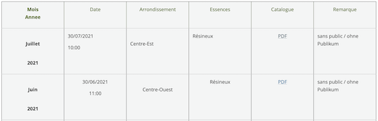Dans le tableau de la page Vente de bois les cellules de contenu ne sont pas correctement reliées aux cellules d'en-têtes, posant des difficultés de navigation aux utilisateurs de technologies d'assistance.
Liens
Recommandation :
Donner des intitulés de lien explicites, grâce à des informations de contexte notamment, utiliser le titre de lien le moins possible. S'assurer que le nom visible est contenu dans le nom accessible.
Liens-images
Un lien-image est un lien dont le contenu n'est composé que d'une ou plusieurs images (balises <img>). Généralement, ces liens ne posent aucun problème aux utilisateurs voyants qui parviennent à comprendre la destination du lien grâce à l'image et son contexte. En revanche, pour une personne aveugle, ces liens doivent obligatoirement posséder un intitulé.
L'intitulé d'un lien-image est généré grâce à l'alternative de l'image contenue dans ce lien.
Constats sur le site
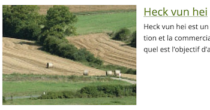Plusieurs liens-images sont composés d'image n'ayant pas d'alternative et ne restituant donc pas d'intitulé pour les utilisateurs naviguant à l'aide de technologies d'assistance. On note ces absences d'intitulés sur les liens-images de certains éléments de la liste des résultats de recherche.
Titres de liens (infobulles)
La restitution des titres de liens (attribut title sur une balise) dépend fortement des lecteurs d'écran et des préférences utilisateurs. Ainsi, l'utilisation de ces infobulles doit être limitée aux cas où l'infobulle apporte de l'information supplémentaire par rapport à l'intitulé du lien. De plus, cette infobulle doit reprendre au moins l'intitulé du lien pour être considérée comme conforme.
Constats sur le site
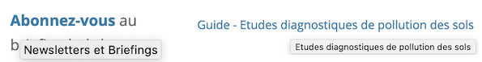De nombreux liens sont accompagnés d'un attribut title qui ne reprend pas au moins l'intitulé visible du lien, pouvant poser des problèmes de restitution en fonction des technologies d'assistance utilisées. On note l'incohérence entre les attributs title et les intitulés visibles des liens par exemple sur les pages : accueil, contact, FAQ, etc.
Sur la page agréments, les attributs title de la plupart des liens pointant vers des documents bureautiques ne reprennent pas au moins l'intitulé visible du lien.
Scripts
Recommandation :
Donner si nécessaire à chaque script une alternative pertinente. Rendre possible le contrôle de chaque code script au moins par le clavier et la souris et s'assurer de leur compatibilité avec les technologies d'assistance. Identifier les messages de statut lorsque c'est nécessaire.
Utilisation des boutons et des liens
Pour les aveugles et les grands malvoyants qui utilisent un lecteur d'écran, ce manque de distinction claire entre les liens et les boutons peut poser de graves problèmes.
Ainsi, un bouton implémenté sous la forme d'un lien qui déclenche une action de la page, risque de perturber l'utilisateur qui s'attendra au chargement d'une nouvelle page.
De manière générale, les liens devraient être réservés à l'affichage d'une nouvelle page ou la création de liens d'accès rapide dans le contenu. Dans tous les autres cas, l'emploi d'un bouton d'action est plus pertinent.
Enfin, chaque bouton doit avoir un nom accessible défini, soit par l'intermédiaire d'un texte (visible ou positionné hors écran) ou d'une propriété title, aria-label ou aria-labelledby.
Constats sur le site

En mode réduit, le bouton permettant d'ouvrir le menu principal n'a pas d'intitulé, rendant impossible aux utilisateurs de technologies d'assistance de connaitre la fonctionnalité de ce bouton.
Utilisation inappropriée de propriétés ARIA
Les propriétés ARIA sont chargées de transmettre des informations indispensables à la restitution et l'utilisation des composants développés avec JavaScript aux technologies d'assistance. Une utilisation inappropriée peut poser des problèmes de restitution notamment.
Constats sur le site

On note certaines utilisations incorrectes des propriétés ARIA :
- L'usage de la propriété
aria-currentsur un élément non interactif (<li>) alors qu'ils devraient être placés sur les liens (<a>). - L'utilisation de la propriété
role="heading"sur un élément<li>.
Éléments interactifs inaccessibles au clavier
Si un élément ne peut pas recevoir le focus ou n'est pas totalement utilisable au clavier, les utilisateurs pour lequels le clavier est le seul moyen de naviguer seront bloqués.
Constats sur le site
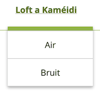Les éléments de niveau inférieur du menu principal ne sont pas accessibles au clavier. Aucune alternative n'est possible pour accéder aux pages autres que celles de 1er niveau.
Gestion de la visibilité de zones
Le site possède des fonctionnalités d'affichage ou de masquage des zones de contenus. L'état affiché/masqué du contenu additionnel doit pouvoir être disponible pour les technologies d'assistance afin que les utilisateurs aveugles accèdent à cet état.
Pour ce type d’élément, l’implémentation du motif ARIA Disclosure est recommandée.
Constats sur le site
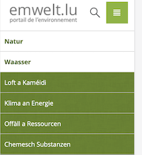En mode réduit, les boutons d'ouverture du menu principal et la zone de recherche n'implémentent pas le motif ARIA Disclosure, permettant de gérer l'affichage / masquage de la zone contenant le menu principal ou le formulaire de recherche.
Gestion du focus
Les repositionnements de focus sont indispensables pour que l'utilisateur qui ne voit pas l'écran (aveugle par exemple) ou qui utilise des moyens de navigation complexes puisse utiliser chaque fonctionnalité de manière logique et cohérente. Les exemples les plus fréquents sont les systèmes de navigation dans l'écran, les systèmes de mise à jour de contenu, les téléchargements de fichiers, les fonctions d'ajout ou de suppression.
Constats sur le site
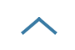Le bouton "Haut de page", présent dans le pied de page et permettant de repositionner l'utilisateur vers le haut de la page ne repositionne pas correctement le focus en haut de la page, le parcours de tabulation continuant après le bouton.
Éléments obligatoires
Recommandation
Vérifier que chaque page web a un code valide selon le type de document, un titre pertinent et une indication de langue par défaut. Vérifier que les balises ne sont pas utilisées uniquement à des fins de présentation, que les changements de langues et de direction de sens de lecture sont indiqués.
Titre de la page
Le titre de la page (visible dans l'onglet du navigateur) est un élément de repère dans le site web. Pour les utilisateurs de lecteurs d'écran (utilisateurs aveugles ou grands malvoyants), c'est le premier élément restitué par le lecteur d'écran au chargement de la page. Cela permet de donner du contexte aux utilisateurs qui n'ont pas une vision globale de la page. Pour les utilisateurs avec des troubles de la mémoire, c'est l'information à laquelle ils accèdent lorsqu'ils naviguent avec l'historique de navigation du navigateur. Il est donc essentiel d'avoir des titres de pages pertinents, concis et très souvent uniques dans le site, et qui reflètent de la position de l'utilisateur dans le site web.
Il est des cas particuliers, comme les pages dont le contenu est une liste de résultats paginés (ex. : les résultats de recherche), pour lesquels le titre doit refléter la nature de la recherche ainsi que le numéro de page en cours de consultation.
Constats sur le site
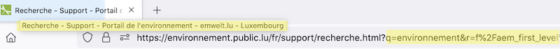Sur la page de recherche, le titre de la page ne reprend pas les informations sur la nature de la recherche : mots clés, filtres et page actuelle. L'absence de ces éléments ne permet pas aux utilisateurs accédant aux contenus à partir de l'historique de navigation de connaitre le contexte de la page.
Indication de langue
Les lecteurs d'écran utilisent les indications de langue pour vocaliser le contenu dans la langue définie. La page doit contenir une définition de langue principale (généralement sur l'élément html).
Ensuite, les éléments de langue étrangère présents dans le contenu doivent être signalés. Si on trouve dans la page des termes absents du dictionnaire de la langue principale de la page, il faut les identifier afin que le lecteur d'écran les restitue dans la langue appropriée. En effet, une mauvaise prononciation pourrait mener à des incompréhensions pour les utilisateurs qui reposent uniquement sur des restitutions orales. Les noms propres sont exclus de cette obligation.
Constats sur le site
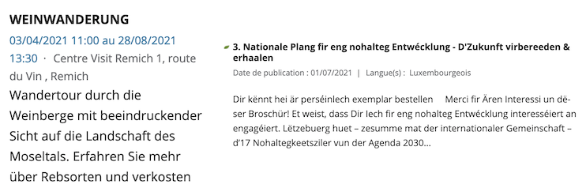On note de manière générale l'absence d'indication de langue sur les pages du site, par exemple sur la page d'accueil", les passages de texte de la zone complémentaire contiennent des mots dans une langue différente de la langue générale de la page : "Newsletter", "Eist Wëllt Lëtzebuerg", "Weinwanderung", etc.
Sur la page d'accueil, les articles de la zone "Publications" sont également pour certains rédigés en langue étrangère sans indication, par exemple "Dir kënnt hei är perséinlech exemplar bestellen [...]".
Balises utilisées à des fins de présentation
Les éléments de structure HTML ont chacun une sémantique particulière (paragraphe, titre, image, lien, etc.). Si les éléments sont mal employés (détournés de leur utilité première), cela peut poser des problèmes aux utilisateurs qui naviguent à l'aide d'une technologie d'assistance (lecteur d'écran, plug-in…). En effet, les technologies d'assistance disposent de raccourcis permettant de naviguer rapidement entre certains types d'éléments (paragraphes, titres, listes, etc.). Si ces éléments sont mal employés, les utilisateurs ne peuvent pas utiliser ces fonctionnalités de repère et de navigation dans le contenu.
Constats sur le site

Sur la page les centres nature et forêt, on note la présence de balises <p> utilisées uniquement pour créer de l'espacement. Les utilisateurs se servant des raccourcis des technologies d'assistance pour naviguer plus rapidement vont accéder à des zones vides.
On note sur le site plusieurs passages de texte qui ne sont structurés que par des éléments <div>, par exemple sur la FAQ, les textes "(*) Les informations introduites dans le dossier sous forme digitale [...]" et "Voir question 3 pour recevoir de plus amples informations [...]", ne permettant pas aux utilisateurs de naviguer dans ces textes à l'aide des raccourcis de leurs technologies d'assistance.
Structuration de l'information
Recommandation
Utiliser des titres, des listes, des abréviations et des citations pour structurer l'information. S'assurer que la structure du document est cohérente.
Titres
Le titrage des contenus est une étape importante dans la structuration des contenus. Cela répond à deux besoins :
- identifier rapidement un contenu recherché ;
- naviguer rapidement dans le contenu en se déplaçant de titre en titre.
Un titrage correct fournit à l'utilisateur d'un lecteur d'écran un plan du document et lui permet de naviguer de titre en titre pour se déplacer plus rapidement dans le contenu de la page.
Pour valider la structure de votre page, vous pouvez utiliser l'extension Firefox HeadingsMap. Lorsque l'extension est active, sélectionnez l'onglet « Headings » et vérifiez la cohérence et l'imbrication des titres.
Constats sur le site
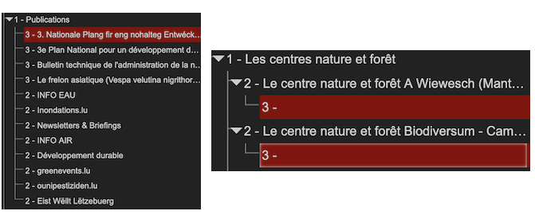On note des incohérences dans la hiérarchie des titres, notamment sur la page d'accueil, où les titres de la zone complémentaire ne sont pas au bon niveau. En effet, la hiérarchie des titres doit recommencer au niveau 2 pour la zone complémentaire (titre "INFO EAU", "Inondations.lu", "Newsletters & Briefings", etc.), sinon ces éléments apparaissent comme des éléments enfants du titre de niveau 2 "Publications".
Il est également préférable d'utiliser une incrémentation de 1 pour chaque niveau de titre, évitant de passer d'un niveau 1 à un niveau 3 par exemple.
Plusieurs pages contiennent des titres vides, créant des ruptures dans la hiérarchie des titres, rendant difficile aux utilisateurs de technologies d'assistance la navigation au travers de ces éléments.
Listes
La structuration en listes permet aux utilisateurs de lecteurs d'écran de consulter plus rapidement le contenu, grâce à des raccourcis spécifiques, et d'accéder directement à une liste ou de la passer sans avoir à en parcourir tous les items.
Constats sur le site
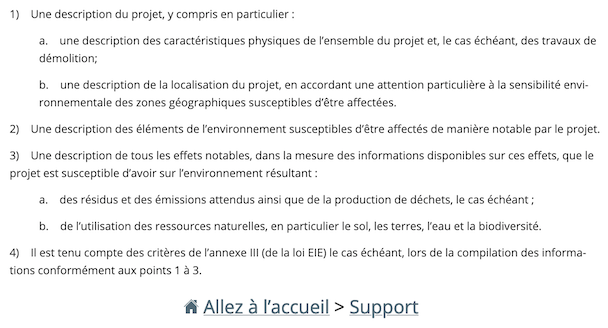Le fil d'Ariane, qui est un système de navigation présent sur toutes les pages, est une suite de liens qui doit être structurée sous forme de liste ordonnée (<ol><li>)dans le code source de la page.
Sur la page FAQ, plusieurs passages de textes sont structurés visuellement comme des listes ordonnées mais ne sont pas définis comme des listes dans le code source de la page.
Structure du document
L'utilisation correcte des balises HTML5 et des landmarks ARIA va permettre d'enrichir la restitution pour les utilisateurs aveugles qui ne perçoivent pas les mises en forme : la navigation principale ne sera plus perçue simplement comme une liste de liens, elle sera restituée à l'utilisateur comme un élément de navigation, par l'intermédiaire du lecteur d'écran qui annoncera « région » ou « repère ».
De plus, ces marqueurs sémantiques vont également constituer des éléments de navigation rapide dans la page. Grâce à un raccourci clavier, certains utilisateurs vont pouvoir naviguer plus rapidement entre les régions qui auront été ainsi identifiées.
Constats sur le site
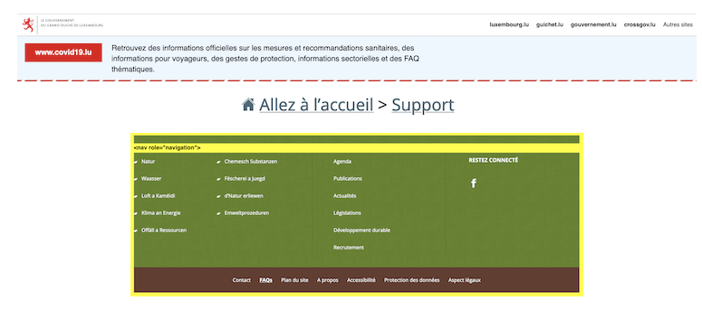Les éléments de l'en-tête contenant l'information sur le Coronavirus et la barre de liens du gouvernement ne sont pas localisés dans une région. Ces 2 éléments doivent se trouver à l'intérieur de la balise <header>.
La zone du fil d'Ariane est considérée comme un élément de navigation et doit donc être implémentée à l'intérieur d'une balise <nav>, par exemple sous la forme <nav role="navigation" aria-label="Vous êtes ici">.
La zone contenant les liens du pied de page n'est pas un élément de navigation, il s'agit uniquement d'une liste de liens qui ne doit pas être implémentée dans une balise <nav role="navigation">.
Présentation de l'information
Recommandation
Utiliser des feuilles de styles pour contrôler la présentation de l'information. Vérifier l'effet de l'agrandissement des tailles des caractères sur la lisibilité. S'assurer que les liens sont correctement identifiables, que la prise de focus est signalée, que l'interlignage est suffisant et donner la possibilité à l'utilisateur de contrôler la justification des textes. S'assurer que les textes cachés sont correctement restitués et que l'information n'est pas donnée uniquement par la forme ou la position d'un élément. S'assurer que les contenus sont lisibles et utilisables dans une fenêtre de largeur réduite. Veiller à ce que l'application de paramètres typographiques n'entraîne pas la perte de contenu ou de fonctionnalité. S'assurer que les contenus qui apparaissent au survol et à la prise de focus puissent être contrôlés par l'utilisateur.
Utilisation de CSS exclusivement
Certains utilisateurs qui présentent des troubles de la lecture (personnes dyslexiques par exemple), vont avoir besoin d'adapter la présentation des pages avec leurs propres mises en forme. Cela est possible sans difficulté si le site web utilise exclusivement les feuilles de styles CSS pour réaliser les mises en forme. Cependant, l'utilisation d'attributs et balises HTML de mise en forme rend ces adaptations plus compliquées, sinon impossibles.
Le RGAA donne la liste des attributs et balises qu'il est interdit d'utiliser.
Constats sur le site
Le tableau de la page Vente de bois contient des attributs de mise en forme (par exemple cellspacing, cellpading, valign, etc.), empêchant les utilisateurs qui en ont besoin d'appliquer des adaptations de présentation.
Contenu compréhensible sans les styles : ordre visible vs ordre réel
Un utilisateur aveugle n'a pas accès à la mise en forme qui parfois est porteuse d'informations importantes, notamment des relations entre les éléments.
Il est important de ne pas implémenter les textes dans l'ordre visuel, mais bien dans l'ordre logique de dépendance et hiérarchie des éléments.
Le contenu doit rester compréhensible sans les feuilles de styles (vous pouvez tester vos contenus en désactivant les feuilles de styles).
Constats sur le site
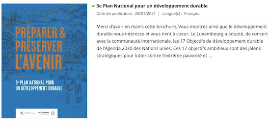Sur la page d'accueil, les liens-images des articles de la zone "Publications" sont positionnés avant le titre de l'article. Il faudrait repositionner le lien-image après le titre de l'article pour conserver une cohérence entre l'ordre visible et l'ordre réel.
Contenus cachés aux technologies d'assistance
Il est nécessaire pour les personnes se servant de technologies d'assistance que les éléments interactifs, accessibles visuellement, soient correctement restitués. En effet, les utilisateurs de contrôles vocaux, par exemple, ne pourront pas accéder à un élément interactif qu'ils voient si celui-ci est exclu de l'arbre d'accessibilité, par l'utilisation de la propriété aria-hidden="true".
Constats sur le site
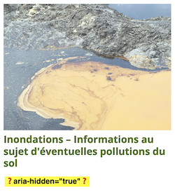Sur la page d'accueil, les liens-images de la zone "Dernières actualités", implémentent les propriétés aria-hidden="true" et tabindex="-1" sortant ces éléments de la restitution et de la navigation au clavier. Lorsqu'il s'agit de liens redondants, il est préférable de mettre en place un lien composite englobant l'image (avec une alternative vide) et le titre.
Contenus additionnels au survol et au focus
Les contenus additionnels qui apparaissent au survol ou à la prise de focus (par exemple, un menu déroulant, une infobulle d'information), peuvent être contrôlés par l'utilisateur. Par exemple, les utilisateurs malvoyants se servant de loupes d'écran peuvent déclencher l'affichage accidentel des contenus qui apparaissent au survol. Ces affichages non désirés perturbent la consultation pour ces utilisateurs. Il est alors nécessaire de disposer d'un moyen simple pour les masquer et continuer sa consultation.
Également, en utilisant une loupe d'écran, il est probable que le contenu additionnel soit en fait apparu en dehors de la zone de zoom de la loupe, l'utilisateur doit pouvoir survoler le contenu additionnel à la souris.
Constats sur le site
Les éléments de niveau inférieur du menu principal, qui s'affichent au survol d'un élément de 1er niveau, ne peuvent pas être masqués à l'appui sur la touche ESC du clavier, rendant impossible la fermeture immédiate de la zone, pouvant poser problème aux utilisateurs de loupe d'écran par exemple.
Formulaires
Recommandation :
Associer pour chaque formulaire chacun de ses champs à son étiquette, grouper les champs dans des blocs d'informations de même nature, regrouper les items de même nature dans les listes de choix, donner à chaque bouton un intitulé explicite. Vérifier la présence d'aide à la saisie, s'assurer que le contrôle de saisie est accessible et que l'utilisateur peut contrôler les données à caractère financier, juridique ou personnel.
Contrôle de saisie et aide à la saisie
Tous les champs obligatoires doivent être identifiés préalablement à toute validation de l’utilisateur.
Pour les champs qui attendent un format de saisie particulier pour être validés, ce format doit être spécifié à l’utilisateur par un passage de texte visible à proximité du champ. De plus, si l’utilisateur commet une erreur sur ce champ, alors le message d’erreur doit présenter un exemple réel de saisie.
Enfin, les messages d'erreur de saisie des champs de formulaire doivent être liés correctement aux champs en erreur.
Constats sur le site
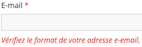Sur la page de contact, le champ "E-mail" attend un format particulier qui n'est pas spécifié dans l'étiquette du champ ou dans un passage de texte associé au champ par la relation aria-describedby.
Le message d'erreur affiché lorsque le format du champ "E-mail" est incorrect ne contient pas d'exemple réel de saisie, pouvant aider les utilisateurs ayant des troubles de compréhension à saisir une adresse e-mail correcte.
Identification des données attendues
Certains utilisateurs qui ont des troubles d'accès au langage verbal (paralysie cérébrale, aphasie par exemple) auront des difficultés à accéder au sens des termes écrits. Ainsi, pour leur permettre de remplacer les étiquettes présentes dans les formulaires par des étiquettes (verbales ou imagées) qu'ils connaissent, il est nécessaire d'identifier les champs avec un attribut particulier, de sorte qu'une technologie d'assistance pourra réaliser la personnalisation du formulaire nécessaire à l'utilisateur.
L'identification de ces champs permet également aux utilisateurs d'employer des outils pour remplir automatiquement les champs identifiés avec des valeurs de l'utilisateur.
On ne va rechercher que les champs qui attendent une donnée personnelle. Le RGAA demande d'utiliser l'attribut autocomplete et il fournit l'ensemble des valeurs possibles pour l'attribut.
Constats sur le site
On note sur la page de contact l'absence d'attribut autocomplete sur les champs le nécessitant : "Nom", "Prénom" et "E-mail".
Navigation
Recommandation :
Faciliter la navigation dans un ensemble de pages par au moins deux systèmes de navigation différents (menu de navigation, plan du site ou moteur de recherche), un fil d'Ariane et l'indication de la page active dans le menu de navigation. Identifier les groupes de liens importants et la zone de contenu et donner la possibilité de les éviter par des liens de navigation interne. S'assurer que l'ordre de tabulation est cohérent et que la page ne comporte pas de piège au clavier. S'assurer que les raccourcis clavier qui utilisent une seule touche sont contrôlables par l'utilisateur.
Landmarks ARIA
Pour fournir des points de repère aux utilisateurs aveugles, il faudra également implémenter les landmarks ARIA sur les balises HTML 5 de la page.
Constats sur le site
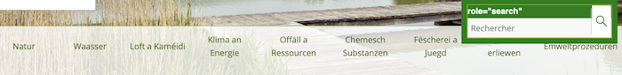La structure des landmarks ARIA doit être corrigée :
- Ajouter la propriété
role="navigation"à la balise<nav>du menu principal pour le définir comme un élément de navigation. - Supprimer la propriété
role="search"du moteur de recherche, celui-ci n'indexant pas l'intégralité du site (absence du contenu de la page "Aspects légaux" par exemple).
Consultation
Recommandation
Vérifier que l'utilisateur a le contrôle des procédés de rafraîchissement, des changements brusques de luminosité, des ouvertures de nouvelles fenêtres et des contenus en mouvement ou clignotants. Ne pas faire dépendre l'accomplissement d'une tâche d'une limite de temps sauf si elle est essentielle et s'assurer que les données saisies sont récupérées après une interruption de session authentifiée. Proposer des versions accessibles ou rendre accessibles les documents en téléchargement. S'assurer que la consultation n'est pas dépendante de l'orientation de l'écran. Toujours proposer un geste simple en alternative d'un geste complexe permettant de réaliser une action.
Documents en téléchargement
Assurez-vous que chaque document soit accessible (cf. les Guides de créations de documents bureautiques accessibles), ou qu'il dispose d'une alternative accessible proposant le même contenu (par exemple, une version HTML correctement structurée).
Constats sur le site

On note sur le site la présence de nombreux documents bureautiques qui contiennent des erreurs d'accessibilité récurrentes, notamment :
- Des contrastes de textes insuffisants.
- Documents non balisés.
- Présence de schémas sans alternative textuelle.